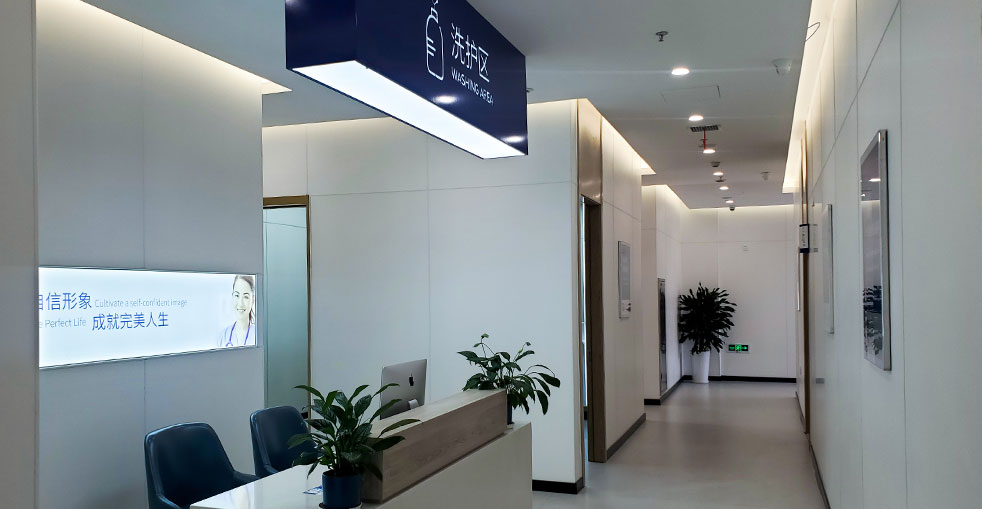

先進的體毛摘取與轉移技術，為頭皮捐贈供應有限的患者提供解決方案

我們的體毛移植手術為頭皮捐贈供應有限的患者提供先進的解決方案。我們可以安全地從多個體毛區域（包括胸部、背部、腿部與手臂）摘取優質毛囊，然後將它們移植到頭皮以獲得優異效果。這個選項讓過去被認為「不適合」的患者也能夠進行毛髮修復。
個人化體毛移植與完整隱私保護
擴展捐贈可能性的先進技術
完整評估頭皮與體毛捐贈可用性與品質
策略性計畫結合頭皮與體毛以達到最佳覆蓋效果
使用專業技術從多個體毛區域進行先進FUE摘取
仔細準備與儲存體毛毛囊以進行移植
微針種植與體毛策略性定位以達到最佳效果
專業護理流程與18個月追蹤計畫以達到最佳生長
業界領導者，效果有證實
自2006年起即為微針植髮技術的先驅與領導者
遍及中國各大城市，均維持相同高標準
創新的微針與種植筆技術，呈現卓越效果
深受全球患者信賴，帶來改變人生的效果
在整個治療過程中為國際患者提供完整英文支援
最先進的設施與嚴格的安全規範，讓您安心
看看我們患者達成的驚人轉型


與我們滿意患者共度的時刻

成功手術後與我們醫療團隊合影

與我們醫師一同慶祝絕佳效果

又一位滿意患者分享喜悅

患者出院前與我們專家合影

開心的患者與陳醫師在治療後

興奮的患者展示新樣貌
聽聽全球各地滿意患者的心得
"我胸部因事故有疤痕導致禿髮區域！大麥的體毛移植完全修復了它！現在看起來完美又自然！我在Google上找到大麥，真的很滿意！"
"我想要更多胸毛讓外觀更陽剛！大麥的移植給了我想要的！毛髮自然生長，看起來完美！我是從香港來的，強力推薦！"
"我手臂上有手術疤痕需要覆蓋！體毛移植讓疤痕完全消失！效果太驚人了！"
"我在Google上研究體毛移植好幾個月！大麥的微針技術給了我最好、最自然的效果！我太開心了！我是從中國台灣來的！"
"我想要填補稀疏的私密區域！體毛移植效果完美！毛髮自然生長，看起來完全正常！"
"我腿上有灼傷疤痕需要毛髮覆蓋！移植完全覆蓋了它們！效果看起來太自然了，沒人看得出來！"
體驗我們現代舒適的設施

我們最先進的設施

在我們頂級休息室放鬆

無菌且先進

隱私且專業

舒適的術後空間

歡迎的入口
找到關於植髮的常見問題解答
聯絡我們進行免費諮詢
15810155700
+86 13730143529
hairtransplant@qq.com